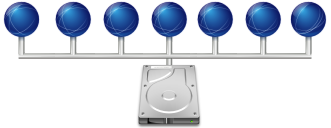

Debian : Installer un serveur NFS

Introduction
NFS, pour Network File System (système de fichiers en réseau) est à l'origine un protocole qui permet à un ordinateur d'accéder à des fichiers via un réseau. Il permet de partager des données principalement entre systèmes UNIX.
Ici, on va détailler l'installation d'un serveur NFS et montrer comment connecter un client à ce partage.
Installation
L'installation se fait via deux paquets :
Copier vers le presse-papierCode BASH :
apt install nfs-kernel-serverSi on a un nom de domaine, on peut éditer le fichier idmapd.conf
Copier vers le presse-papierCode BASH :
vi /etc/idmapd.conf
Copier vers le presse-papierCode BASH :
Domain = linuxtricks.lan
Et on active et démarre le service nfs :
Copier vers le presse-papierCode BASH :
systemctl enable --now nfs-server.service
Configuration
La configuration des partages sur le serveur se fait dans le fichier /etc/exports.
Plus d'informations dans cet article dédié : https://www.linuxtricks.fr/wiki/nfs-parametrer-les-partages-avec-le-fichier-exports
Partie client
Pour la partie cliente, on installe aussi les paquets adéquats :
Copier vers le presse-papierCode BASH :
apt install nfs-commonEt pour monter le partage, rien de plus simple :
Copier vers le presse-papierCode BASH :
mkdir -p /media/nfs mount -t nfs 192.168.21.200:/media/partage /media/nfs
Avec la commande df, on peut voir que tout est monté :
Copier vers le presse-papierCode BASH :
df -h Filesystem Size Used Avail Use% Mounted on 192.168.21.200:/media/partage 20G 985M 18G 5% /media/nfs
On peut aussi monter ça dans le fstab, mais attention, si le serveur NFS n'est pas dispo, le boot peut venir en échec (option nofail utile dans ce cas, mais montage à réaliser manuellement) :
Copier vers le presse-papierCode BASH :
192.168.21.200:/media/partage /media/nfs nfs auto,_netdev,nofail 0 0
Quelques options de montage utiles
Au travail, j'utilise un partage NFS pour étendre du stockage pour un coût peu élevé.
Mais le système se comporte bizarrement lorsque le partage NFS est indisponible (reboot du NAS, perte temporaire de réseau).
Pour cela, on peut monter le partage NFS avec les options soft, retrans et timeo. Je choisis 2 retransmissions en cas d'échec et 5 dixièmes de secondes (500 ms) de timeout (le NAS et le serveur sont dans le même sous-réseau, sur le même switch)
Copier vers le presse-papierCode BASH :
mount -t nfs4 192.168.21.200:/media/partage /media/nfs -o soft,retrans=2,timeo=5
Ou dans /etc/fstab :
Copier vers le presse-papierCode BASH :
192.168.21.200:/media/partage /media/nfs nfs auto,_netdev,nofail,soft,retrans=2,timeo=5 0 0